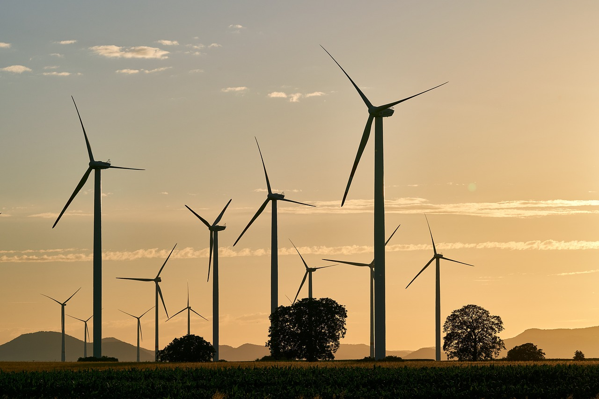

Kenya possesses some of Africa's strongest wind resources. From the Turkana Corridor to the Ngong Hills, we develop wind energy projects that deliver clean, competitive power to the national grid and beyond.
Wind energy technology converts the kinetic energy of moving air into electricity using turbine generators mounted on tall towers. The fundamental principle is elegantly simple: wind passing over the turbine blades creates lift, causing the rotor to spin a shaft connected to a generator. Modern onshore turbines typically range from 1.5 MW to 6 MW in rated capacity, with hub heights of 80 to 140 metres and rotor diameters exceeding 150 metres. The technological trajectory has been relentless - taller towers access stronger, more consistent wind speeds, while advanced blade aerodynamics, direct-drive permanent magnet generators, and sophisticated power electronics have pushed capacity factors from 25 percent two decades ago to over 45 percent in prime locations today.
Kenya is blessed with some of Africa's most promising wind resources. The Turkana Corridor in northern Kenya experiences powerful channeled winds that average 11 to 13 metres per second during the peak season - among the strongest measured anywhere on the continent. The Lake Turkana Wind Power project, with 365 turbines producing 310 MW, stands as Africa's largest wind farm and a testament to what is possible when technology meets political will. The Ngong Hills, overlooking Nairobi, have hosted wind turbines since the 1990s and continue to demonstrate the viability of ridge-top installations near major load centres. Our wind resource assessment work at Ecotrunk involves deploying meteorological masts and SODAR units to collect at least twelve months of site-specific data before committing to turbine selection and layout design.
Kenya's wind corridors, particularly the Turkana Corridor, rival the best wind resources globally. Modern turbines achieve capacity factors exceeding 45% in prime locations, generating electricity at costs competitive with fossil fuels - without fuel price volatility or carbon emissions.
Wind projects drive profound socio-economic benefits in host communities. In Turkana, the wind farm brought all-weather roads, reliable mobile coverage, and employment to one of Kenya's most marginalised regions. Community development agreements fund schools, clinics, and local infrastructure.
Wind and solar profiles are naturally complementary - wind often blows strongest at night and during cloudy periods when solar generation drops. Hybrid wind-solar systems smooth overall generation, improve capacity factors, and reduce the need for battery storage, creating more cost-effective renewable power.
Wind generation in Kenya peaks during the June-September dry season when hydroelectric output is lowest, and at night when solar is unavailable. This natural pattern makes wind an ideal complement to Kenya's existing hydro and expanding solar capacity.
From multi-megawatt wind farms to community-scale installations, our wind energy practice covers the full project lifecycle.
End-to-end project delivery from wind resource assessment and turbine selection through construction, grid connection, and commissioning - backed by rigorous technical and financial modelling.
Upgrading existing wind farms with modern, higher-capacity turbines and improved control systems to boost energy production, extend operational life, and enhance grid compliance.
Combining complementary wind and solar profiles to smooth overall generation, improve capacity factors, and maximise utilisation of shared grid connection infrastructure.
Developing smaller-scale turbines for rural electrification, water pumping, and productive uses in off-grid areas - designed for local ownership, operability, and long-term sustainability.
Deploying meteorological monitoring campaigns with SODAR and met masts, comprehensive data analysis, and financial modelling to de-risk investment decisions and optimise project design.
Procurement, logistics, and installation of wind turbines from leading global manufacturers, with full quality assurance, warranty management, and after-sales service support.
Every wind project begins with the wind itself. We deploy meteorological masts and SODAR units for minimum twelve-month data collection campaigns, analysing speed, direction, turbulence, and shear profiles to create detailed energy yield assessments. This science drives every decision that follows.
Turbine selection and micro-siting use computational flow modelling to match hardware precisely to site conditions - optimising hub height, rotor diameter, and array layout to maximise energy capture while minimising wake losses. We then work closely with Kenya Power and KETRACO on grid integration, ensuring reactive power capability, frequency response, and fault ride-through compliance with Kenya's Grid Code.
Community engagement is not a box-ticking exercise. We start early, consult genuinely, and structure transparent benefit-sharing agreements that create lasting local value - employment, training, infrastructure, and enterprise development. A wind farm that lacks community support will struggle to operate. One that has it becomes a source of regional pride for decades.
"Good wind resource assessment is 80 percent of a successful project. The rest is engineering, relationships, and relentless attention to detail. We do all four."
Whether you are exploring a new wind site, planning a hybrid renewable project, or seeking to repower an existing installation - our team has the technical expertise and local experience to guide you from concept to commercial operation.
Start Your Wind Assessment